"Oh, life is a glorious
cycle of song,
A medley of extemporanea;
And love is a thing that can never go wrong;
And I am Marie of Roumania.”— Dorothy Parker[1]
Many people find it absurd to think of a person as like a machine —so we often hear statements like this:
Citizen: Of course machines can do useful things. We can make them add up huge columns of numbers or assemble cars in factories. But nothing made of mechanical stuff could ever have genuine feelings like love.
No one finds it surprising these days when we make machines that do logical things, because logic is based on clear, simple rules of the sorts that computers can easily use. But Love by its nature, some people would say, cannot and ought not be explained in such ways! Listen to Pablo Neruda:
" ...love has to be so,
involving and general,
particular and terrifying,
honoured and yet in mourning,
flowering like the stars,
and measureless as a kiss.” — from ‘Extravagaria’
What is Love, and how does it work? Is this something we want to understand, or should we see such poems as hints that we don’t really care to probe into it? Hear our friend Charles attempt to describe his latest infatuation.
“I’ve just fallen in love with a wonderful person. I scarcely can think about anything else. My sweetheart is unbelievably perfect—of indescribable beauty, flawless character, and incredible intelligence. There is nothing I would not do for her.”
On the surface such statements seem positive; they’re all composed of superlatives. But note that there’s something strange about this: most of those phrases of positive praise use syllables like ‘un’, ‘less’ and ‘in’ —which show that they really are negative statements describing the person who’s saying them!
Wonderful. Indescribable,
------ (I can't figure out what attracts me to her.)
I scarcely can think of anything else.
------ (Most of my mind has stopped working.)
Unbelievably Perfect. Incredible.
------ (No sensible person believes such things.)
She has a Flawless Character.
------(I've abandoned my critical faculties.)
There is nothing I would not do for her.
------ (I've forsaken most of my usual goals.)
Our friend sees all this as positive. It makes him feel happy and more productive, and relieves his dejection and loneliness. But what if most of those pleasant effects result from his success at suppressing his thoughts about what she actually says:
“Oh Charles—a woman needs certain things. She needs to be loved, wanted, cherished, sought after, wooed, flattered, cosseted, pampered. She needs sympathy, affection, devotion, understanding, tenderness, infatuation, adulation, idolatry—that isn't much to ask, is it Charles?” [2]
Thus love can make us disregard most defects and deficiencies, and make us deal with blemishes as though they were embellishments—even when, as Shakespeare said, we still may be partly aware of them:
WHEN my love swears that she is made of
truth,
I do believe her, though I know she lies.
We are equally apt to deceive ourselves, not only in our personal lives but also when dealing with abstract ideas. There, too, we often close our eyes to conflicts and clashes between our beliefs. Listen to Richard Feynman’s words:
“That was the beginning and the idea seemed so obvious to me that I fell deeply in love with it. And, like falling in love with a woman, it is only possible if you don't know too much about her, so you cannot see her faults. The faults will become apparent later, but after the love is strong enough to hold you to her. So, I was held to this theory, in spite of all the difficulties, by my youthful enthusiasm.”— 1966 Nobel Prize lecture.
What does a lover actually love? That should be the person to whom you’re attached—but if your pleasure mainly results from suppressing your other questions and doubts, then you’re only in love with Love itself.
∞∞∞∞∞∞∞∞∞∞∞∞∞∞∞∞∞∞∞∞
Citizen: So far, you have spoken only about what we call infatuation—sexual lust and extravagant passion. That leaves out most of the usual meanings of ‘love’—such as tenderness, trust, and companionship.
Indeed, once those short-lived atrtractions fade, they sometimes go on to be replaced by more enduring relationships, in which we exchange our own interests for those of the persons to whom we’re attached:
Love, n. That disposition or state of feeling with regard to a person which (arising from recognition of attractive qualities, from instincts of natural relationship, or from sympathy) manifests itself in solicitude for the welfare of the object, and usually also in delight in his or her presence and desire for his or her approval; warm affection, attachment. —Oxford English Dictionary
Yet even that larger conception of love is too constricted to cover enough, because Love is a kind of suitcase-like word, which includes other kinds of attachments like these:
The love of a parent for a child.
A child's affection for parents and friends.
The bonds that make lifelong companionships.
The connections of members to groups or their leaders.
We also apply that same word ‘love’ to our fondness for objects, events, and beliefs.
A convert's adherence to doctrine or
scripture.
A patriot's allegiance to country or nation.
A scientist's passion for finding new truths.
A mathematician's devotion to proofs.
We thus apply 'love' to our likings for things that we treasure, desire, or fill us with pleasure. We apply it to bonds that are sudden and brief, but also to those that increase through the years. Some occupy just small parts of our minds, while others pervade our entire lives.
But why do we pack such dissimilar things into a single suitcase-like word? It’s the same for our other ‘emotional’ terms; each of them abbreviates a diverse collection of mental states. Thus Anger may change our ways to perceive, so that innocent gestures get turned into threats, and alters the manners in which we react, to make us more inclined to attack. Fear too affects the ways we react, but makes us retreat from dangerous things (as well as from some that might please us too much).
Returning to the meanings of ‘Love’, one thing seems common to all those conditions: each leads us to think in different ways:
When a person you know has fallen in love, it's almost as though someone new has emerged—a person who thinks in other ways, with altered goals and priorities. It's almost as though a switch had been thrown, and a different program has started to run.
This book is mainly filled with ideas about what could happen inside our brains to cause such great changes in how we think.
∞∞∞∞∞∞∞∞∞∞∞∞∞∞∞∞∞∞∞∞
From time to time we think about how we try to manage our minds:
Why do I waste so much of my time?
What determines whom I’m attracted to?
Why do I have such strange fantasies?
Why do I find mathematics so hard?
Why am I afraid of heights and crowds?
What makes me addicted to exercise?
But we can’t hope to understand such things without adequate answers to questions like these:
What sorts of things are emotions and
thoughts?
How do our minds build new ideas?
What are the bases for our beliefs?
How do we learn from experience?
How do we manage to reason and think?
In short, we all need better ideas about the ways in which we think. But whenever we start to think about that, we encounter yet more mysteries.
What is the nature of Consciousness?
What are feelings and how do they work?
How do our brains Imagine things?
How do our bodies relate to our minds?
What forms our values, goals, and ideals?
Now, everyone knows how Anger feels––or Pleasure, Sorrow, Joy, and Grief —yet we still know almost nothing about how those processes actually work. As Alexander Pope asks in his Essay on Man, are these things that we can understand?
“Could he, whose rules the rapid comet
bind,
Describe or fix one movement of his mind?
Who saw its fires here rise, and there descend,
Explain his own beginning, or his end?”
How did we manage to find out so much about atoms and oceans and planets and stars—yet so little about the mechanics of minds? Thus Newton discovered just three simple laws that described the motions of all sorts of objects; Maxwell uncovered just four more laws that explained all electro-magnetic events; then Einstein reduced all those and more into yet smaller formulas. All this came from the success of those physicists’ quest: to find simple explanations for things that seemed, at first, to be highly complex.
Then, why did the sciences of the mind make less progress in those same three centuries? I suspect that this was largely because most psychologists mimicked those physicists, by looking for equally compact solutions to questions about mental processes. However, that strategy never found small sets of laws that accounted for, in substantial detail, any large realms of human thought. So this book will embark on the opposite quest: to find more complex ways to depict mental events that seem simple at first!
This policy may seem absurd to scientists that have been trained to believe such statements as, “One should never adopt hypotheses that make more assumptions than they need.” But it is worse to do the opposite—as when we use ‘psychology words’ that mainly hide what they try to describe. Thus, every phrase in the sentence below conceals its subject’s complexities:
You look at an object and see what it is.
For, ‘look at’ suppresses your questions about the systems that choose how you move your eyes. Then, ‘object’ diverts you from asking how your visual systems partition a scene into various patches of color and texture—and then assign them to different ‘things.’ Similarly, ‘see what it is’ serves to keep you from asking how that recognition relates to other things that you’ve seen in the past.
It is the same for most of the commonsense words we use when we try to describe the events in minds—as when one makes a statement like, “I think I understood what you said.” Perhaps the most extreme examples of this are when we use words like ‘you’ and ‘me,’ because we all grow up with this fairy-tale:
We each are constantly being controlled by powerful creatures inside our minds, who do our feeling and thinking for us, and make our important decisions for us. We call these our Selves or Identities—and believe that they always remain the same, no matter how we may otherwise change.
This “Single-Self” concept serves us well in our everyday social affairs. But it hinders our efforts to think about what minds are and how they work—because, when we ask about what Selves actually do, we get the same answer to every such question:
Your Self sees the world by using your senses. Then it stores what it learns in your memory. It originates all your desires and goals—and then solves all your problems for you, by exploiting your ‘intelligence.’
.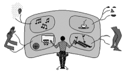
Figure 1- 1
A Self controlling its person’s Mind
What attracts us to this queer idea, that we don’t make any decisions ourselves but delegate them to some other entity? Here are a few kinds of reasons why a mind might entertain such a fiction:
Child Psychologist: As a child, you learned to distinguish among some persons in your environment. Later, you somehow came to conclude that you are such a person, too—but at the same time, you may have assumed that there is a person inside of you.
Psychotherapist: The Single-Self legend helps makes life seem pleasant, by hiding from us how much we’re controlled by all sorts of conflicting, unconscious goals,
Practical Person: That image makes us efficient, whereas better ideas might slow us down. It would take too long for our hard-working minds to understand everything all the time.
However, although the Single-Self concept has practical uses, it does not help us to understand ourselves—because it does not provide us with smaller parts we could use to build theories of what we are. When you think of yourself as a single thing, this gives you no clues about issues like these:
What determines the subjects I think about?
How do I choose what next to do?
How can I solve this difficult problem?
Instead, the Single-Self concept only offers useless answers like these:
My Self selects what to think about.
My Self decides what I should do next.
I should try to make Myself get to work.
Whenever we wonder about our minds, the simpler are the questions we ask, the harder it seems to find answers to them. When asked about a complex physical task like, “How could a person build a house,” you might answer almost instantly, “Make a foundation and then build walls and a roof.” However, we find it much harder to think of what to say about seemingly simpler questions like these:
How do you recognize things that you
see?
How do you comprehend what a word means?
What makes you like pleasure more than pain?
Of course, those questions are not really simple at all. To ‘see’ an object or ‘speak’ a word involves hundreds of different parts of your brain, each of which does some quite difficult jobs. Then why don’t we sense that complexity? That’s because most such jobs are done inside parts of the brain whose internal processes are hidden from the rest of the brain.
At the end of this book, we’ll come back to examine the concepts of Self and Identity, and conclude that the structures that we call our Selves are elaborate structures that each of us builds to use for many purposes.
Whenever you think about your “Self,” you are switching among a huge network of models, each of which tries to represent some particular aspects of your mind—to answer some questions about yourself.
∞∞∞∞∞∞∞∞∞∞∞∞∞∞∞∞∞∞∞∞
William James: “If one should seek to name each particular one of them of which the human heart is the seat, each race of men having found names for some shade of feeling which other races have left undiscriminated … all sorts of groupings would be possible, according as we chose this character or that as a basis. The only question would be, does this grouping or that suit our purpose best?”—In Principles of Psychology.
Sometimes a person gets into a state where everything seems to be cheerful and bright—although nothing outside has actually changed. Other times everything pleases you less: the entire world seems dreary and dark, and your friends complain that you seem depressed. Why do we have such states of mind—or moods, or feelings, or dispositions—and what causes all their strange effects? Here are some of the phrases we find when dictionaries define ‘emotion’.
The subjective experience of
a strong feeling.
A state of mental agitation
or disturbance.
A mental reaction involving the state of one’s body.
A subjective rather than conscious affection.
The part of consciousness that involves feeling.
A non-rational aspect of reasoning.
If you didn’t yet know what emotions are, you certainly wouldn’t learn much from this. What is subjective supposed to mean, and what could a conscious affection be? In what ways do those ‘parts of consciousness’ become involved with what we call feelings? Must every emotion involve a disturbance? Why do so many such questions arise when we try to define what ‘emotion’ means?
The reason for this is simply that ‘emotion’ is one of those suitcase-like words that we use to conceal the complexity of very large ranges of different things whose relationships we don’t yet comprehend. Here are a few of the hundreds of terms that we use to refer to our mental conditions:
Admiration, Affection, Aggression, Agitation, Agony, Alarm, Ambition, Amusement, Anger, Anguish, Anxiety, Apathy, Assurance, Attraction, Aversion, Awe, Bliss, Boldness, Boredom, Confidence, Confusion, Craving, Credulity, Curiosity, Dejection, Delight, Depression, Derision, Desire, Detest, Disgust, Dismay, Distrust, Doubt, etc.
Whenever you change your mental state, you might try to use those emotion-words to try to describe your new condition—but usually each such word or phrase refers to too wide a range of states. Many researchers have spent their lives at classifying our states of mind, by arranging terms like feelings, dispositions, tempers, and moods into orderly charts or diagrams—but, should we call anguish a feeling or a mood? Is sorrow a type of disposition? But no one can settle the use of such terms because different traditions make different distinctions, and different people have different ideas about how to describe their various states of mind. How many readers can claim to know precisely how each of those feelings feels?[3]
Grieving for a lost child,
Fearing that nations will never live in peace,
Rejoicing in an election victory,
Excited anticipation of a loved one’s arrival,
Terror as your car loses control at high speed,
Joy at watching a child at play,
Panic at being in an enclosed space.
In everyday life, we expect our friends to know what we mean by pleasure or fear—but I suspect that attempting to make our old words more precise has hindered more than helped us to make theories about how human minds work. So this book will take a different approach, by thinking of each mental condition as based on the use of many small processes.
“Infants, when suffering even slight pain, moderate hunger, or discomfort, utter violent and prolonged screams. Whilst thus screaming their eyes are firmly closed, so that the skin round them is wrinkled, and the forehead contracted into a frown. The mouth is widely opened with the lips retracted in a peculiar manner, which causes it to assume a squarish form; the gums or teeth being more or less exposed.” —Charles Darwin, in The Emotions of Animals
One moment your baby seems perfectly well, but then come some restless motions of limbs. Next you see a few catches of breath, and then suddenly the air fills with screams. Is baby hungry, sleepy, or wet? Whatever the trouble may turn out to be, those cries compel you to find some way to help—and once you find the remedy, things quickly return to normality. In the meantime though, you, too, feel distressed. When a friend of yours cries, you can ask them what's wrong—but when your baby abruptly changes its state, there may seem to be "no one home" to communicate with.
Of course, I do not mean to suggest that infants don’t have ‘personalities.’ Soon after birth you can usually sense that a particular baby reacts more quickly than others, or seems more patient or irritable, or even more inquisitive. Some of those traits may change with time, but others persist through the rest of their life. Nevertheless, we still need to ask what could make an infant so suddenly switch, between one moment and the next, from contentment or calmness to anger or rage?
To answer that kind of question, you would need a theory of model of the machinery that underlies that infant’s behavior. So, let’s imagine that someone has asked you to build an artificial animal. You could start by making a list of goals that your animal-robot needs to achieve. It may need to find parts to repair itself with. It might need defenses against attacks. Perhaps it should regulate its temperature. It might even need ways to attract helpful friends. Then once you have assembled that list, you could tell your engineers to meet each of those needs by building a separate “instinct-machine”—and then to package them all into a single body-box.
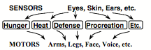
Figure 1- 2
What goes inside each instinct-machine? Each of them needs three kinds of resources: some ways to recognize situations, some knowledge about how to react to these, and some muscles or motors to execute actions.
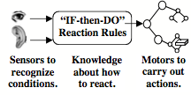
Figure 1- 3
What goes inside that knowledge box? Let's begin with the simplest case: suppose that we already know, in advance, all the situations our robot will face. Then all we need is a catalog of simple, two-part "If–>Do" rules—where each If describes one of those situations—and each Do describes an action to take. Let’s call this a “Rule-Based Reaction-Machine.”
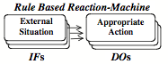
Figure 1- 4
If you are too hot,
Move into the shade.
If you are hungry, Find something to eat.
If you’re facing a threat, Select some defense.
Every infant animal is born with many If–>Do rules like these. For example, each human infant is born with ways to maintain its body temperature: when too hot, it can pant, sweat, stretch out, or vasodilate, when too cold, it can shiver, retract its limbs or vasoconstrict—or metabolize to produce more heat. Then later in life, we learn to use actions that change the external world.
If you are too cold, Turn on a heater.
If your room is too hot, Open a window.
If too much sunlight, Pull down the shade.
It would be naive to try to describe a mind as nothing more than bundles of If–>Do rules. However, the great animal psychologist Nikolaas Tinbergen showed in his book, The Study of Instinct,[4] that when such rules are combined in certain ways, they can account for a remarkable range of different things that animals do. This diagram shows only a part of the structure that Tinbergen proposed to explain how a certain fish behaves:
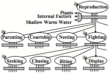
Figure 1- 5
Of course, it would need much more than this to support the higher levels of human thought. The rest of this book will describe some ideas about the structures that create our human minds.
∞∞∞∞∞∞∞∞∞∞∞∞∞∞∞∞∞∞∞∞
We all know ways to describe our minds, as they appear to us when seen from outside:
Albert Einstein: “We are all ruled in what we do by impulses; and these impulses are so organized that our actions in general serve for our self preservation and that of the race. Hunger, love, pain, fear are some of those inner forces which rule the individual's instinct for self preservation. At the same time, as social beings, we are moved in the relations with our fellow beings by such feelings as sympathy, pride, hate, need for power, pity, and so on.”— Einstein 1950
This book will try to show how such states of mind could come from machines inside our brains. To be sure, many thinkers still insist that machines can never feel or think.
Citizen: A machine can only do what it is programmed to do, and does it without any thinking or feeling. No machine can get tired or bored or have any kind of emotion at all. It cannot care when something goes wrong and, even when it gets things right, it feels no sense of pleasure or pride, or delight in those accomplishments.
Vitalist: That’s because machines have no spirits or souls, and no wishes, ambitions, desires, or goals. That’s why a machine will just stop when it’s stuck—whereas a person will struggle to get something done. Surely this must be because people are made of different stuff; we are alive and machines are not.
In earlier times, those views seemed plausible, because living things seemed so different from machines—and no one could even begin to conceive of how physical things could feel or think. But once we developed more scientific instruments (and better ideas about science itself), then ‘life’ became less mysterious, because now we could see that each living cell consists of hundreds of kinds of machinery.
Holist: Yes, but many people still maintain that there still remains a mystery about how a living thing could be nothing more than the result of all that mechanical stuff. Surely we’re more than the sum of our parts.
That once was a popular belief, but today it is widely recognized that behavior of a complex machine depends only on how its parts interact, but not on the ‘stuff’ of which they are made (except for matters of speed and strength). In other words, all that matters is the manner in which each part reacts to the other parts that it is connected to. For example, we can build computers that behave in identical ways, no matter if they consist of electronic chips or are made of wood and paper clips—provided that their parts perform the same processes, so far as the other parts can see.
This suggests replacing old questions like, “What sorts of things are emotions and thoughts?” by more constructive ones like, “What processes does each emotion involve?” and “How could machines perform such processes?” To do this, we’ll start with the simple idea that every brain contains many parts, each of which does certain specialized jobs. Some can recognize various patterns, others can supervise various actions, yet others can formulate goals or plans, and some can contain large bodies of knowledge. This suggests that we could envision a mind (or a brain) as composed of a great many different ‘resources.’
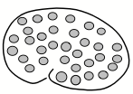
Figure 1- 6
At first this image may seem hopelessly vague—yet it can help us start to understand how a mind could make a large change in its state. For example, the state we call “angry” could be what happens when you activate some resources that help you react with more speed and strength—while also suppressing some other resources that usually make you act prudently. This will replace your usual cautiousness with aggressiveness, change empathy into hostility, and cause you to you plan less carefully. All of this could result from turning on the resource labeled Anger in this diagram:
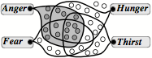
Figure 1- 7
Similarly, we could explain such mental conditions as hunger and fear—and we could even account for what happened to Charles in his state of acute infatuation: perhaps such a process turned off the resources he normally used to recognize another person’s faults—and also supplanted some of his usual goals by ones that he thought Celia wants him to hold. So now, let’s make a generalization:
Each of our major ‘emotional states’ results from turning certain resources on while turning certain others off—thus changing the way one’s brain behaves.
And although that may seem like an oversimplification, we’ll take it to a further extreme, because we see emotional states as particular types of ways to think.
Each of our various ‘Ways to Think’ results from turning certain resources on while turning certain others off—thus changing the way one’s brain behaves.
In other words, we’ll see the mind as what happens when different sets of resources interact, and most of this book will be about how some of those mental resources might work. First, perhaps, we ought to ask how those resources originate. Clearly, some of them must have evolved to promote functions that keep our bodies alive; anger and fear evolved for protection, and hunger evolved to serve nutrition—and many such ‘basic instincts’ are already built into our brains at birth. Other resources appear in later years, such as the ones involved with reproduction (which often engages some risky behaviors), some of these also must be inborn, but others must be mainly learned.
Another question would ask what happens when several selections are turned on at once, so that some other resources get both aroused and suppressed? This could lead to some of the mental states in which we say, “our feelings are mixed.” For example, when one detects some sort of threat, this might arouse parts of both Anger and Fear.
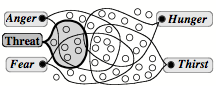
Figure 1- 8
Then if one tried both to attack and retreat, that could lead to paralysis—and that sometimes occurs in some animals. However, human minds can escape from such traps, as we’ll see in some later chapters, by using “higher-level” resources to help to settle conflicts like these.
Student: I could better grasp what you’re talking about, if you could be a bit more precise about what you mean by the word ‘resource.’ Do you imagine that each resource has a separate, definite place in the brain?
I’m using ‘resource’ in a hazy way, to refer to all sorts of structures and processes that range from perception and action to ways to think about bodies of knowledge. Some such functions are performed in certain particular parts of the brain, while others use parts that are more widely spread over much larger portions of the brain. Other parts of this book discuss more ideas about the kinds of resources our brains seem to support, as well as how their functions might be organized. (However, I won’t try to identify where these might lie in the brain because research on this is advancing so quickly that any conclusion one might make today could be outdated in just a few weeks.)
As we said, this resource-cloud idea may at first seem too vague—but as we develop more detailed ideas about how our mental resources behave, we’ll gradually replace it with more elaborate theories about how our mental resources are organized.
Student: You speak of a person’s emotional states as nothing more than ways to think, but surely that’s too cold and abstract—too intellectual, dull, and mechanical. Besides, it doesn’t explain the pleasures and pains that come when we succeed or fail, or the thrills that we experience from works of artistic genius.
Rebecca West: “It overflows the confines of the mind and becomes an important physical event. The blood leaves the hands, the feet, the limbs, and flows back to the heart, which for the time seems to have become an immensely high temple whose pillars are several sorts of illumination, returning to the numb flesh diluted with some substance swifter and lighter and more electric than itself.”[5]
Many popular ideas about emotions emphasize the extent to which events that occur in our body-parts can affect our mental processes—as when we experience muscular tensions. However, our brains do not directly detect those tensions, but only react to signals that come through nerves that come from and go to those body-parts. So, while our bodies can play important roles, we can also regard our bodies, too, as composed of resources our brains can exploit.
The rest of this book will focus on what sort of mental resources we have, what kinds of things each resource might do, and how each affects those it’s connected to. We’ll begin by developing more ideas about what turns resources off and on.
Student: Why should one ever turn off a resource? Why not keep them all working all the time?
Indeed, certain resources are never switched off—like those involved with vital functions like respiration, balance, and posture—or those that constantly keep watch for certain particular types of danger. However, if all our resources were active at once, they would too often get into conflicts. You can’t make your body both walk and run, or move in two different directions at once. So, when one has several goals that are incompatible, because they compete for the same resources (or for time, space, or energy), then one needs to engage some process that will manage them.
It is much the same in a human society: when different people have different goals, they may be able to pursue these separately. But when this leads to excessive conflict or waste, societies often then create multiple levels of management in which (at least in principle) each manager controls the activities of certain lower-level individuals.
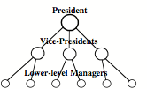
Figure 1- 9
However, both in societies and brains, such hierarchies usually turn out to only nominal, because when a low-level unit encounters a problem, then it may need to “get the attention” of higher level managers. Indeed, few ‘higher-level executives’ know enough of the system’s details to specify what must be done—hence much of their ‘power’ in fact consists in selecting among options proposed by their subordinates. Then, in effect, those low-level individuals will, at least transiently, be controlling or constraining what their superiors do.
For example, whenever some mental process gets stuck, it may need to split the problem into smaller parts, or to remember how a similar problem was solved in the past, or to make a series of different attempts and then to compare and evaluate these—or to try to learn some completely different way to deal with such situations. This means that a low-level process inside your mind may engage so many higher-level ones that you end up in some new mental state that amounts to a different “way to think.”
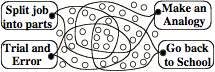
Figure 1- 10
What if a person were to attempt to use several such ‘ways to think” at once? Then these would have to compete for resources, and that would need high-level management—which would usually choose one alternative. This could be one reason why it seems to us that our thoughts flow in serial, step-by-step streams —despite the fact that every such step must still be based on many smaller processes that operate simultaneously. (Another reason this book will suggest is that this so-called ‘stream of consciousness’ is an illusion that comes because each higher-level part of one’s mind has virtually no access to knowledge about what happens in most of one’s other processes.)
Citizen: This idea of switching one’s set of
resources seems might explain the behavior of an insect or
fish—but Charles doesn’t switch, in the way you describe, to a totally
different mental state. He just changes some aspects
of how he behaves. tootoo simple and rigidand
rigid to me. It
I completely agree. However, any theory has to begin with a highly simplified version of it—and even this trivial model could help to explain why human infants so frequently show such sudden changes in their states. But certainly, in later years, each child develops more fluent techniques though which their resources can be aroused and suppressed to different extents—and this leads to more ability to combine both old instincts and new ways to think. Now, several of them can be active at once—and that’s when we speak of our feelings as mixed.
Behold the child, by nature's kindly
law,
Pleas'd with a rattle, tickl'd with a straw:
Some livelier plaything gives his youth delight,
A little louder, but as empty quite:
Scarfs, garters, gold, amuse his riper stage,
And beads and pray'r books are the toys of age:”
– Alexander Pope in Essay on Man.
When an infant gets upset, that change seems as quick as the flip of a switch.
A certain infant could not bear frustration, and would react to each setback by throwing a tantrum. He’d hold his breath and his back would contract so that he’d fall rearward on his head.
Yet several weeks later, that behavior had changed.
No longer completely controlled by his rage, he could also add ways to protect himself, so that when he felt this coming on, he’d run to collapse on some soft, padded place.
This suggests that at first, in the infant brain, only one Selector can work at a time, so that not many conflicts will arise. However, those infantile systems cannot resolve the conflicts we face in our later lives. This led our human brains to evolve higher-level systems in which some instincts that formerly were distinct could now become increasingly mixed. But as we gained more abilities, we also gained new ways to make mistakes, so we also had to evolve new ways to control ourselves—which led to yet greater developments.
We tend to regard a problem as ‘hard’ when we’ve tried several methods without making progress. But it isn’t enough just to know that you’re stuck: you’ll do better if you can recognize that you’re facing some particular kind of obstacle. For if you can diagnose what “Type of Problem” you face, this can help you to select a more appropriate “Way to Think.” So, this book will suggest that to deal with hard problems, our brains augmented their ancient “Reaction-Machines” with what we’ll call “Critic-Selector Machines.”
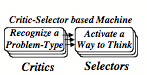
Figure 1- 11
The simplest versions of these would be the “If-Do” machines described in 1-4. There, when an “If” detects a certain real-world situation, its “Do” reacts with a certain real-world action. Of course, this means that simple If- Do machines are highly constrained and inflexible.
However, the “Critics” of Critic-Selector machines detect situations or problems inside the mind. Similarly, the “Selectors” of Critic-Selector machines don’t just perform actions in the external world, but can react to mental obstacles—by turning other resources on or off—thus switching to different ways to think.
For example, one such way to think would be to consider several alternative ways to proceed before selecting which action to take. Thus, an adult who encounters what might be a threat need not just react instinctively, but first could proceed to deliberate on whether to retreat or attack—by using high-level strategies to choose among possible ways to react. This way, one could make a thoughtful choice between becoming angry or afraid. For, if it seems more appropriate to intimidate an adversary, one can make oneself angry deliberately—although one may not be aware that one is doing this.
Later, I’ll make more suggestions about how our various Ways to Think might work, and about how we come to develop them. We know that during our childhood years, our brains go through multiple stages of growth. To make room for these, Chapter 5 will propose that this results in at least these six levels of mental procedures, and here we’ll just briefly summarize this idea:
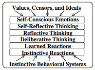
Figure 1- 12
The lowest level of this diagram corresponds to the most common kinds of ‘instincts’ that our brains are equipped with from birth (although some don’t appear in how we behave until later.) The highest levels support the sorts of ideas that we later acquire and call by names like ethics or values. In the middle are layers of methods we use to deal with all sorts of problems, conflicts, and goals; this includes much of what we call everyday commonsense thinking. For example, at the “deliberative” level, you might consider several different actions to take, then imagine the effects of each, and then compare those alternatives. Then afterwards, at the ‘reflective’ levels you might think about what you have done, and wonder if the decisions you made were good—and finally, you might “self-reflect” about whether those actions were worthy of the ideals that you have set for yourself.
We all can observe the progression of our children’s values and abilities. Yet none of us can recollect the early steps of our own mental growth! One reason for this could be that, during those times, we keep developing ways to build memories—and each time we switched to new versions of these, this makes it difficult to retrieve (or to understand) the records we made in previous times. Perhaps those old memories still exist, but in forms that we no longer can comprehend—so we cannot remember how we progressed from our infantile reaction-sets to our using more powerful ways to think. We’ve rebuilt our minds too many times to remember how our infancies felt!
∞∞∞∞∞∞∞∞∞∞∞∞∞∞∞∞∞∞∞
Some habits are much more difficult to cure or change than others are. Hence a struggle may often be observed in animals between different instincts, or between an instinct and some habitual disposition; as when a dog rushes after a hare, is rebuked, pauses, hesitates, pursues again, or returns ashamed to his master; or as between the love of a female dog for her young puppies and for her master, —for she may be seen to slink away to them, as if half ashamed of not accompanying her master. —Charles Darwin, in The Descent of Man
This chapter has raised some questions about how people could change their states so much. Let’s look back to our first example of this: When someone you know has fallen in love, it's almost as though a switch had been thrown, and a different program has started to run. Our Critic-Selector model of mind suggests that such a change could result when a certain “Selector” activates a certain particular set of resources. Thus Charles’s attraction to Celia becomes stronger because a certain Selector has suppressed most of his usual fault–finding Critics.
Psychologist: Indeed, infatuations sometimes strike suddenly. But other emotions may slowly flow and ebb—and usually, in our later years, our mood-shifts tend to become less abrupt. Thus an adult may be slow to take offense, but may then go on to brood for months on even a small or imagined affront.
Our twenty-year-old tabby-cat shows few signs of human maturity. At one moment she'll be affectionate, and seek out our companionship. But after a time, in the blink of an eye, she'll rise to her feet and walk away, without any sign of saying goodbye. In contrast, our twelve-year-old canine pet will rarely depart without looking back—as though he’s expressing a certain regret. The cat’s moods seem to show one at a time, but the dog’s dispositions seem more mixed, and less as though controlled by a switch.
In either case, any large change in which resources are active will substantially alter one’s mental state. Such a process might begin when one Selector resource directly arouses several others:
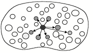
Figure 1- 13
Then, some of those newly aroused resources may proceed to activating yet other ones—and if each such change leads to several more, this all could result in a large-scale “cascade.”
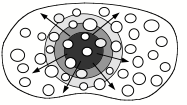
Figure 1- 14
The further these activities spread, the more they will change your mental state, but, of course, this won’t change everything. When Charles engages a new Way to Think, not all his resources will be replaced—so, in many respects he’ll still be the same. He will still be able to see, hear, and speak—but now he’ll perceive things in different ways, and may select different things to discuss. He may now have some different attitudes, but still will have access to most of his commonsense knowledge. He will still have some of the same plans and goals—but different ones will be pursued because they now have different priorities.
Yet despite all these changes, Charles will insist that he still has same ‘identity’. To what extent will he be aware of how his mental condition has altered? He sometimes won’t notice those changes at all, but at other times, he may find himself asking question like, "Why am I am getting so angry now?" However, even to think of asking such questions, Charles’ brain must be equipped with ways to “self-reflect” on some of his recent activities—for example, by recognizing the spreading of certain cascades. Chapter 4 will discuss how this relates to the processes that we call “consciousness,” and chapter 9, at the end of this book, will talk more about the concepts of Self and Identity.
∞∞∞∞∞∞∞∞∞∞∞∞∞∞∞∞∞∞∞∞
Citizen: What are emotions, and why do we have them? What are the relation between one’s emotions and one’s intellect?
When we talk about a person’s mind, we usually use the plural, emotions, but we always the singular noun to speak about someone’s intellect. However, this book will take the view that each person has multiple ways to think, and that the conditions we call ‘emotional’ are merely instances of these. To be sure, we all grow up with the popular view we only have only a single way to think—called ‘logical’ or ‘rational’— but that our thinking can be colored, or otherwise influenced by so-called emotional factors.
However, the concept of logical thinking is incomplete—because logic can help us to draw conclusions from the assumptions that we happen to make—but logic, itself, says nothing about which assumptions we ought to make, and section 7-4 will talk about more than a dozen ways to think, in which logic plays only minor roles, whereas much more of our mental power comes from finding useful analogies.
In any case, our Citizen’s question illustrates our all-too-common tendency to try to divide any complex thing into two separate, complementary parts—such as emotion vs. intellect. However, section 9-2 will argue that few such ‘dumb-bell’ theories describe two genuinely different ideas, but merely suggest a single idea and then contrast it with everything else. To avoid that, this book will take the view that, whenever you think about something complex, you should try to depict it with three or more parts, or else switch to some different way to think!
Citizen: Why would one want to think of oneself as though one were nothing more than a machine?
In everyday the term machinelike has come to have two opposite meanings: (1) “to have no intentions, goals, or emotions,” and (2) “to be relentlessly committed to a single purpose or policy." Each meaning suggests inhumanity, as well as a kind of stupidity—because excessive commitment results in rigidity, while lack of purpose leads to uselessness. However, if the ideas in this book are right, both of those views will be obsolete, because we’ll show ways to make machines that not only will have persistence, aim, and resourcefulness, but will also have hosts of checks and balances—as well as abilities to change and further extend their abilities.
Citizen: But machines can’t feel or imagine things. So, even if we could make them think, would not they still be missing the sense of experience that gives meaning to our human lives?
We have many words that we can use for vaguely describing how we feel—but our culture has not encouraged us much to make theories of how those feelings work. We know that anger makes us more belligerent, and that contented people less often get into fights—but those emotions-words don’t point to ideas about how those conditions affect our mental states.
We recognize this when we deal with machines: Suppose that one morning your car won't start—but when you ask your mechanic for help, you only receive this kind of reply: "It appears that your car doesn’t want to run. Perhaps it has become angry at you because you haven’t been treating it well." Clearly a ‘mentalistic’ description like this won’t help to explain how your car behaves. Yet we don’t get annoyed when people use those kinds of words in our social lives.
However, if we want to understand any complex thing—be it a brain or an automobile, one needs to develop good sets of ideas about the relationships among the parts inside. To know what might be wrong with that car, one must have enough knowledge to ask if there’s something wrong with its starter switch, or whether the fuel tank has been completely drained, or if some excessive strain has broken some shaft, or if some electrical circuit fault has completely discharged the battery. In the same way, one cannot get much from seeing a mind as a Single Self: one must study the parts to know the whole. So the rest of this book will argue that, for example, to understand why being angry feels as it does, you will some detailed theories about the relationships among the parts of your mind.
Citizen: If my mental resources keep changing so much, what gives me the sense that I’m still the same Self, no matter how happy or angry I get?
Why do all of us come to believe that somewhere, deep in the heart of each mind, there exists some permanent entity that experiences all our feelings and thoughts? Here is a very brief sketch of how I will try to answer this in Chapter 9:
In our early stages of development, our low-level processes solve many small problems without any sense of how this happens. However, as we develop more levels of thought, those higher levels start to find ways to represent some aspects of our recent thoughts. Eventually these develop into a collection of ‘models’ of ourselves.
A simple model of a person's self might consist of parts connected like this:
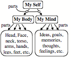
Figure 1- 15
However, each person eventually builds other, more complex self-models that represent many other ideas about, for example, one’s social relationships, physical skills, and economic attitudes. So Chapter 9 will argue that when you say ‘Self,’ you are referring, not to a single structure or thing, but to an extensive network of different such models, which you use to represent many different aspects of yourself.
Citizen: How do we get new goals and ideals?
In the usual view of how human minds grow, each child begins with instinctive reactions, but then goes through stages of mental growth that give us additional layers and levels of goals. Those older instincts may still remain, but these new resources gain increasing control—until we can think about our own motives and goals, and perhaps try to change or reformulate them.
But how could we learn to which new goals to adopt? No infant could ever be wise enough to make good such choices by itself. So Chapter 2 will argue that our brains must come equipped with some special kinds of machinery to help them, somehow, to absorb the goals and ideals of our parents and friends!
∞∞∞∞∞∞∞∞∞∞∞∞∞∞∞∞∞∞∞
[1]See poet John Hollander’s essay on Dorothy Parker at www.english.uiuc.edu/maps/poets/m_r/parker/lightverse.htm
[2]Adapted from Barry Took and Marty Feldman, Round the Horne, BBC Radio, 1966
[3]Adapted from a note by Aaron Sloman in comp.ai.philosophy, 16/5/1995.
[4]Adapted from Tinbergen 1951.
[5] Rebecca West, The Strange Necessity, Doubleday, 1928, ISBN 0781270626.